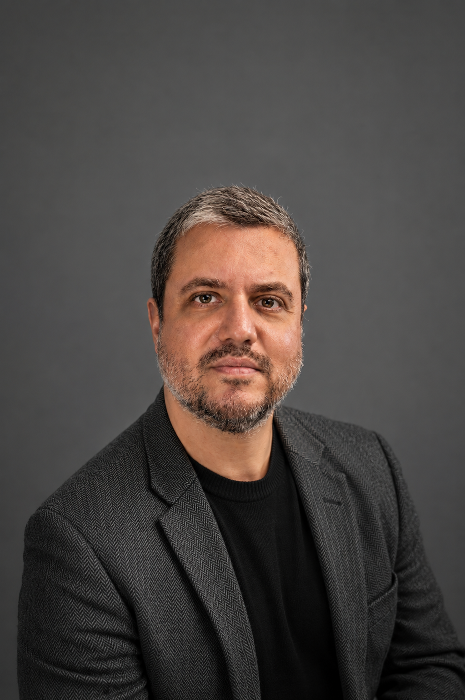

01
Ciência Política
Instituições políticas, democracia, representação, governo e comportamento institucional.
Ver produçãoProfessor e pesquisador de Ciência Política da Universidade Federal do Pará (UFPA), membro da Transparência Brasil, doutor em Ciência Política, produz análises sobre democracia, instituições, corrupção, transparência e accountability com foco no Brasil e na América Latina.

Luiz Fernando Miranda é professor de Ciência Política na Universidade Federal do Pará (UFPA), atuando na Faculdade de Ciências Sociais e no Programa de Pós-Graduação em Ciência Política. É doutor em Ciência Política pela Universidade Federal Fluminense (UFF).
Também é vice-presidente da Transparência Brasil, organização de referência nacional em integridade pública, transparência, accountability e controle democrático. Integra o Conselho Deliberativo da instituição desde 2021.
Sua trajetória conecta pesquisa acadêmica, debate público, análise institucional e produção literária. Seu trabalho busca tornar temas complexos da política brasileira mais compreensíveis, sem perder o rigor analítico.
Uma atuação que articula docência, pesquisa, análise institucional, integridade pública e produção literária, aproximando universidade, sociedade civil e debate público.
Instituições políticas, democracia, representação, governo e comportamento institucional.
Ver produçãoPesquisa sobre integridade pública, accountability, controle social e transparência democrática.
Ver produçãoLeitura crítica de conjunturas, crises institucionais, eleições e processos políticos contemporâneos.
Ver produçãoArtigos, capítulos, livros, eventos acadêmicos, orientação e formação de pesquisadores.
Ver produçãoPoesia, ensaio, prosa breve e escrita como forma de interpretação sensível da vida social.
Ver produçãoDivulgação de ideias, comentários políticos e aproximação entre ciência política e debate público.
Ver produçãoO trabalho combina formação acadêmica, experiência institucional, atuação na sociedade civil e linguagem capaz de dialogar com públicos diversos.
Docência e pesquisa em Ciência Política, com formação sólida e trajetória universitária.
Vice-presidência da Transparência Brasil, conectando pesquisa, accountability e sociedade civil.
Interpretação da política a partir de democracia, instituições, poder, corrupção e transparência.
Integra produção acadêmica, análise pública e sensibilidade literária.
A trajetória de Luiz Fernando Miranda une universidade, pesquisa aplicada, atuação institucional e produção intelectual. Seu trabalho investiga como as instituições democráticas respondem aos desafios da corrupção, da transparência e da accountability.
Ver LinkedInOrganização dos principais canais acadêmicos, profissionais, jornalísticos e literários reunidos a partir do perfil público de Luiz Fernando Miranda.
Análise política, democracia, instituições e debate público.
Poesia, textos literários e produção autoral.
Perfil profissional, trajetória, atuação institucional e produção acadêmica.
Entre em contato para convites, palestras, entrevistas, colaborações acadêmicas, projetos editoriais, análises políticas ou parcerias institucionais.
Para convites, entrevistas, palestras, eventos, colaborações acadêmicas, projetos editoriais ou parcerias institucionais, use os canais abaixo.